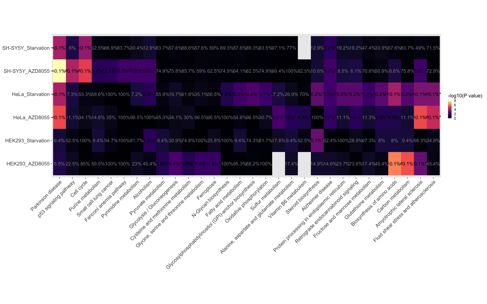
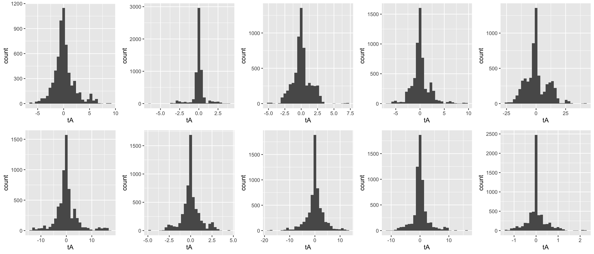

Last updated: 2022-03-21
Checks: 5 2
Knit directory: Induced_autophagy/
This reproducible R Markdown analysis was created with workflowr (version 1.7.0). The Checks tab describes the reproducibility checks that were applied when the results were created. The Past versions tab lists the development history.
The R Markdown is untracked by Git. To know which version of the R
Markdown file created these results, you’ll want to first commit it to
the Git repo. If you’re still working on the analysis, you can ignore
this warning. When you’re finished, you can run
wflow_publish to commit the R Markdown file and build the
HTML.
Great job! The global environment was empty. Objects defined in the global environment can affect the analysis in your R Markdown file in unknown ways. For reproduciblity it’s best to always run the code in an empty environment.
The command set.seed(20220317) was run prior to running
the code in the R Markdown file. Setting a seed ensures that any results
that rely on randomness, e.g. subsampling or permutations, are
reproducible.
Great job! Recording the operating system, R version, and package versions is critical for reproducibility.
Nice! There were no cached chunks for this analysis, so you can be confident that you successfully produced the results during this run.
Using absolute paths to the files within your workflowr project makes it difficult for you and others to run your code on a different machine. Change the absolute path(s) below to the suggested relative path(s) to make your code more reproducible.
| absolute | relative |
|---|---|
| /Users/wenjunliu/Induced_autophagy/output/BminsI.Rda | output/BminsI.Rda |
Great! You are using Git for version control. Tracking code development and connecting the code version to the results is critical for reproducibility.
The results in this page were generated with repository version 3d30821. See the Past versions tab to see a history of the changes made to the R Markdown and HTML files.
Note that you need to be careful to ensure that all relevant files for
the analysis have been committed to Git prior to generating the results
(you can use wflow_publish or
wflow_git_commit). workflowr only checks the R Markdown
file, but you know if there are other scripts or data files that it
depends on. Below is the status of the Git repository when the results
were generated:
Ignored files:
Ignored: -TF2KEGG_network_files/
Ignored: .Rhistory
Ignored: .Rproj.user/
Ignored: Induced_autophagy.Rproj
Ignored: Pathway_analysis-KEGG-_files/
Untracked files:
Untracked: -TF2KEGG_network.Rmd
Untracked: analysis/DE_summary.Rmd
Untracked: analysis/Pathway_analysis_KEGG.Rmd
Untracked: analysis/TF2KEGG_network.Rmd
Untracked: analysis/TFT_enrichment.Rmd
Untracked: data/2_alignedData/featureCounts/rawCounts.rds
Untracked: output/BminsI.Rda
Untracked: output/DE_genes.rds
Untracked: output/TF_KEGG/
Untracked: output/dgeByCon.rds
Untracked: output/goseqTF_DE.Rda
Untracked: output/goseq_kegg.rds
Untracked: output/kgToGene.rds
Untracked: output/spia_netPer.Rda
Untracked: output/spia_net_permut.Rda
Untracked: output/topTables/
Untracked: site_libs/
Unstaged changes:
Modified: README.md
Deleted: analysis/12_metaDEcopy.Rmd
Modified: analysis/DE_analysis.Rmd
Modified: analysis/_site.yml
Deleted: analysis/about.Rmd
Modified: analysis/index.Rmd
Deleted: data/dgeList.rda
Note that any generated files, e.g. HTML, png, CSS, etc., are not included in this status report because it is ok for generated content to have uncommitted changes.
There are no past versions. Publish this analysis with
wflow_publish() to start tracking its development.
#Set libaries
library(ngsReports)
library(tidyverse)
library(magrittr)
library(edgeR)
library(AnnotationHub)
library(ensembldb)
library(scales)
library(pander)
library(cqn)
library(ggrepel)
library(pheatmap)
library(RColorBrewer)
library(corrplot)
library(UpSetR)
library(cowplot)
library(msigdbr)
library(GO.db)
library(goseq)
library(kableExtra)
library(plotly)
library(reshape2)
library(DT)
library(ComplexHeatmap)
library(viridis)
library(igraph)
library(ggraph)
library(textworks)ah <- AnnotationHub() %>%
subset(species == "Homo sapiens") %>%
subset(rdataclass == "EnsDb")
ensDB <- ah[["AH75011"]]
grTrans <- transcripts(ensDB)
trLengths <- exonsBy(ensDB, "tx") %>%
width() %>%
vapply(sum, integer(1))
mcols(grTrans)$length <- trLengths[names(grTrans)]
gcGene <- grTrans %>%
mcols() %>%
as.data.frame() %>%
dplyr::select(gene_id, tx_id, gc_content, length) %>%
as_tibble() %>%
group_by(gene_id) %>%
summarise(
gc_content = sum(gc_content*length) / sum(length),
length = ceiling(median(length))
)
grGenes <- genes(ensDB)
mcols(grGenes) %<>%
as.data.frame() %>%
left_join(gcGene) %>%
as.data.frame() %>%
DataFrame()Raw read counts were read in and an overall DGElist
object was created.
filename <- here::here("data", "filename.txt") %>%
read.table(header = TRUE, sep = "\t",stringsAsFactors = FALSE) %>%
as_tibble()%>%
mutate_at(vars(one_of(c("CELL", "TREAT","CONTR", "TIME"))), as.factor) %>%
mutate(TREATED = ifelse(CONTR == 0,1,0))
dgeList <- here::here("data", "2_alignedData", "featureCounts", "genes.out") %>%
read_delim(delim = "\t") %>%
set_names(basename(names(.))) %>%
as.data.frame() %>%
column_to_rownames("Geneid") %>%
as.matrix() %>%
set_colnames(str_remove(colnames(.), "Aligned.sortedByCoord.out.bam")) %>%
DGEList(
samples = tibble(sample = colnames(.)) %>%
left_join(dplyr::filter(filename, read == "R1")),
genes = grGenes[rownames(.)] %>%
as.data.frame() %>%
dplyr::select(
chromosome = seqnames, start, end,
gene_id, gene_name, gene_biotype, description,
entrezid, gc_content, length
)
) %>%
.[!grepl("rRNA", .$genes$gene_biotype),] %>%
calcNormFactors()
entrezGenes <- dgeList$genes %>%
unnest(entrezid) %>%
dplyr::rename(entrez_gene = entrezid)Significant regulation of KEGG pathways were then determined by
combining evidence derived from modified SPIA and goseq. SPIA is a
pathway perturbation testing strategy that takes pathway topologies in
consideration, while goseq is an enrichment testing
strategy.
312 KEGG pathways and their encoded topologise were extracted using
graphite
# kegg <- pathways("hsapiens", "kegg")
# kegg <- convertIdentifiers(kegg, "ENTREZID")
# prepareSPIA(kegg, "keggEx")
# kgToGene <- sapply(seq_len(length(kegg)), function(x){
# kegg[[x]] %>%
# nodes() %>%
# as.data.frame() %>%
# set_colnames("entrez_gene") %>%
# mutate(entrez_gene = gsub("ENTREZID:", "", entrez_gene),
# entrez_gene = as.integer(entrez_gene),
# gs_name = pathwayTitle(kegg[[x]])) %>%
# left_join(entrezGenes %>%
# dplyr::select(gene_name, entrez_gene)) %>%
# dplyr::select(-"entrez_gene")
# }, simplify = FALSE) %>%
# bind_rows() %>%
# drop_na()
# save(kgToGene, file = here::here("output/kgToGene.rds"))
load(here::here("output/kgToGene.rds"))
all <- entrezGenes %>%
dplyr::filter(!is.na(entrez_gene)) %>%
mutate(entrez_gene = paste("ENTREZID:", entrez_gene, sep = "")) %>%
extract2("entrez_gene")kg <- kgToGene %>%
left_join(grGenes %>%
as.data.frame() %>%
distinct(gene_id, .keep_all = TRUE) %>%
dplyr::select(gene_id, gene_name))
kgByGene <- kg %>%
split(f = .$gene_id) %>%
lapply(pull, gs_name)goseqKEGG pathways with FDR < 0.05 in goseq output were
defined to be significantly over-represented.
# lenPwf_DE <- sapply(names(DE_genes), function(x){
# grTrans %>%
# as.data.frame() %>%
# distinct(gene_id, .keep_all = TRUE) %>%
# dplyr::select(gene_id, length) %>%
# mutate(Status = case_when(gene_id %in% DE_genes[[x]]$gene_id ~ 1, !gene_id %in% DE_genes[[x]]$gene_id ~ 0)) %>%
# with(
# nullp(
# DEgenes = structure(
# Status, names = gene_id
# ),
# genome = "GRCh38.p16",
# id = "ensGene",
# bias.data =length,
# plot.fit = FALSE
# )
# )
# }, simplify = FALSE)
# goseq_kegg <- sapply(names(lenPwf_DE), function(x){
# goseq(lenPwf_DE[[x]],
# gene2cat = kg) %>%
# as_tibble %>%
# dplyr::filter(numDEInCat > 0) %>%
# mutate(
# adjP = p.adjust(over_represented_pvalue, method = "bonf"),
# FDR = as.numeric(p.adjust(over_represented_pvalue, method = "fdr"))
# ) %>%
# dplyr::select(-contains("under")) %>%
# dplyr::rename(
# gs_name = category,
# PValue = over_represented_pvalue,
# nDE = numDEInCat,
# nExpressed = numInCat
# ) %>%
# left_join(kg) %>%
# dplyr::select(
# gs_name, nExpressed, nDE,
# contains("P", ignore.case = FALSE),
# FDR,
# gene_name, gene_id
# ) %>%
# dplyr::filter(
# gene_id %in% DE_genes[[x]]$gene_id
# ) %>%
# chop(c("gene_name", "gene_id")) %>%
# mutate(
# gene_name = vapply(.$gene_name, function(x){
# paste(x,collapse = ";")
# }, character(1)),
# gene_id = vapply(.$gene_id, function(x){
# paste(x,collapse = ";")
# }, character(1))
# ) %>%
# mutate_at(
# vars(one_of(c("PValue", "adjP", "FDR"))),
# formatP
# )
# }, simplify = FALSE)
# names(goseq_kegg) <- c("HEK293_AZD8055", "HEK293_Starvation","SH-SY5Y_AZD8055", "SH-SY5Y_Starvation", "HeLa_AZD8055",
# "HeLa_Starvation")
# saveRDS(goseq_kegg, file = here::here("output/goseq_kegg.rds"))
goseq_kegg <- readRDS(here::here("output/goseq_kegg.rds"))
goseq_kegg_sig <- goseq_kegg %>%
lapply(dplyr::filter, FDR < 0.05)Overlap between enriched KEGG pathways defined under each condition was visualized through the upset plot.
goseq_kegg %>%
lapply(dplyr::filter, FDR < 0.05) %>%
lapply(pull, gs_name) %>%
fromList() %>%
upset(sets = colnames(.),
nintersects = NA,
keep.order = TRUE,
queries = list(
list(query = intersects,
params = list("HEK293_AZD8055", "HeLa_AZD8055",
"HeLa_Starvation", "SH-SY5Y_AZD8055"),
color = "red",
active = T),
list(query = intersects,
params = list("HeLa_AZD8055",
"HeLa_Starvation", "SH-SY5Y_AZD8055","SH-SY5Y_Starvation"),
color = "red",
active = T),
list(query = intersects,
params = list("HEK293_AZD8055","HEK293_Starvation", "HeLa_AZD8055",
"HeLa_Starvation"),
color = "red",
active = T),
list(query = intersects,
params = list( "SH-SY5Y_Starvation", "SH-SY5Y_AZD8055"),
color = "blue",
active = T)
)
)Overlap between KEGG pathways defined to be over-represented under each condition.There wasn’t any KEGG pathways that were over-represented in all conditions but there were 4 that were OR in 4 conditions (colored red) and 1 pathway that was unique to SY5Y cell line (colored blue).
orKEGG_4 <- goseq_kegg %>%
lapply(dplyr::filter, FDR < 0.05) %>%
bind_rows() %>%
group_by(gs_name) %>%
filter(n() == 4) %>%
pull(gs_name) %>%
unique()
orKEGG_1 <- goseq_kegg[str_subset(names(goseq_kegg), "SH")] %>%
lapply(dplyr::filter, FDR < 0.05) %>%
lapply(pull, gs_name) %>%
Reduce(intersect,.) %>%
setdiff(., goseq_kegg[str_subset(names(goseq_kegg), "SH", negate = TRUE)] %>%
lapply(dplyr::filter, FDR < 0.05) %>%
lapply(pull, gs_name) %>%
unname() %>%
unlist())
temp1 <- sapply(names(goseq_kegg), function(x){
goseq_kegg[[x]] %>%
dplyr::filter(gs_name %in% orKEGG_4,
FDR < 0.05) %>%
mutate(Condition = x,
PValue = -log10(PValue)) %>%
dplyr::select(gs_name, PValue , Condition)
}, simplify = FALSE)
hp1 <- temp1 %>%
bind_rows() %>%
# rbind(data.frame(gs_name = orKEGG_4, PValue = NA, Condition = "HeLa_Starvation")) %>%
ggplot(aes(factor(Condition, levels = names(goseq_kegg)),
gs_name, fill = PValue)) +
geom_tile(aes(fill = PValue), fontsize =3) +
scale_fill_viridis(option = "magma",
name = "-log10(P value)") +
theme(
axis.title=element_blank(),
panel.grid = element_blank(),
# axis.ticks = element_blank(),
legend.title = element_text(size= 8),
legend.key.size = unit(3, 'mm'),
axis.text.x = element_text(angle = 45,hjust=1)
# axis.text.y = element_text(colour = col)
) +
ggtitle("Over-represented in at least 4 conditions")
temp2 <- sapply(str_subset(names(goseq_kegg), "SH"), function(x){
goseq_kegg[[x]] %>%
dplyr::filter(gs_name %in% orKEGG_1,
FDR < 0.05) %>%
mutate(Condition = x,
PValue = -log10(PValue)) %>%
dplyr::select(gs_name, PValue, Condition)
}, simplify = FALSE)
hp2 <- temp2 %>%
bind_rows() %>%
replace(is.na(.),0) %>%
ggplot(aes(Condition,
gs_name, fill = PValue)) +
geom_tile(aes(fill = PValue), fontsize =3) +
scale_fill_viridis(option = "magma",
name = "-log10(P value)") +
theme(
axis.title=element_blank(),
panel.grid = element_blank(),
# axis.ticks = element_blank(),
legend.title = element_text(size= 8),
legend.key.size = unit(3, 'mm'),
axis.text.x = element_text(angle = 45,hjust=1)
# axis.text.x = element_text(angle = 45, hjust=1)
# axis.text.y = element_text(colour = col)
) +
ggtitle("Over-represented only in SY5Y")
# pdf(file = "/Users/wenjunliu/RNA_seq_autophagicflux/Manuscript/Figure/newest/summary_KEGG_OR(2hp).pdf",
# width = 10,
# height = 5)
plot_grid(hp1, hp2,
ncol = 2,
rel_heights = c(3,1),
scale = c(1, 0.5),
labels = c("a", "b"))-log10(Pvalue) of KEGG pathways enriched (a) in 4 conditions (b) only in SY5Y cell line*
# dev.off()ALl KEGG pathways that were over-represented in at least one condition were extracted and their FDR were visualised.
allKEGGor <- goseq_kegg %>%
lapply(dplyr::filter, FDR < 0.05) %>%
bind_rows() %>%
pull(gs_name) %>%
unique()
allKEGGor <- setdiff(allKEGGor, "Metabolic pathways")
temp <- sapply(names(goseq_kegg), function(x){
goseq_kegg[[x]] %>%
dplyr::filter(gs_name %in% allKEGGor) %>%
replace(is.na(.),0) %>%
mutate(Condition = x,
logFDR = -log10(FDR),
Sig = ifelse(FDR < 0.05, TRUE, FALSE),
roundedFDR = paste(round(FDR,3)*100, "%", sep = ""),
roundedFDR = ifelse(roundedFDR == "0%", "<0.1%", roundedFDR),
roundedFDR = ifelse(FDR < 0.05, paste(roundedFDR, "*", sep = ""), roundedFDR)) %>%
dplyr::select(gs_name,logFDR, Condition, roundedFDR, Sig)
}, simplify = FALSE) %>%
bind_rows()
allKEGGor_hcl <- temp %>%
dplyr::select(gs_name, logFDR, Condition) %>%
pivot_wider(names_from = Condition, values_from = logFDR) %>%
replace(is.na(.),0) %>%
column_to_rownames("gs_name") %>%
dist() %>%
hclust()
temp %>%
ggplot(aes(factor(gs_name, levels = allKEGGor_hcl$labels[allKEGGor_hcl$order]), Condition)) +
geom_tile(aes(fill = logFDR)) +
geom_text(data = . %>% dplyr::filter(!Sig),
aes(label = roundedFDR), size = 4, color = "azure4") +
geom_text(data = . %>% dplyr::filter(Sig),
aes(label = roundedFDR), size = 4, color = "black") +
scale_fill_viridis(option = "magma",
name = "-log10(P value)") +
theme(
axis.title=element_blank(),
panel.grid = element_blank(),
# axis.ticks = element_blank(),
legend.title = element_text(size= 12),
legend.key.size = unit(3, 'mm'),
axis.text.x = element_text(angle = 45, hjust=1, size = 12),
axis.text.y = element_text(size= 12)
# axis.text.y = element_text(colour = col)
) +
panel_border(remove = TRUE) +
coord_fixed(ratio= 1.8)
The observed peturbation scores of KEGG pathways under each condition
were firstly derived using algorithm adapted from SPIA.
# load("/Users/wenjunliu/Induced_autophagy/output/BminsI.Rda")
# merge_DE_spia <- sapply(names(DE_fc), function(x){
# DE_fc[[x]] %>%
# left_join(entrezGenes) %>%
# dplyr::select(aveFC, entrez_gene) %>%
# unique() %>%
# drop_na() %>%
# mutate(entrez_gene = paste("ENTREZID:", entrez_gene, sep = ""))
# }, simplify = FALSE)
# merge_DE_spia <- sapply(names(merge_DE_spia), function(x){
# merge_DE_spia[[x]] %>%
# extract2("aveFC") %>%
# set_names(merge_DE_spia[[x]]$entrez_gene)
# }, simplify = FALSE)
# spia_netPer <- sapply(names(merge_DE_spia), function(x){
# spia_my(de = merge_DE_spia[[x]], BminsI = BminsI)
# }, simplify = FALSE)
# save(spia_netPer, file = here::here("output/spia_netPer.Rda"))
load(here::here("output/spia_netPer.Rda"))The original SPIA paper uses a gene-labels permutation
based method to test significances of test perturbation scores, which
makes an unrelistic assumption of gene-gene independence.
To overcome this problem, we proposed a sample label permutation approach. In each round of permutation, sample labels are randomly shuffled and the same DE analysis workflow is undertaken, leading to permuted DEGs and their permuted logFCs. Those are then used as input for the pathway perturbation testing algorithm.
1000 permutations are performed to obtain the null distribution of perturbation scores for each pathway.
To get ready for permutation, DGELists were split by cells, undetectable genes were removed and cqn was applied to add offset terms just like how DE analyses were performed before.
DGELists were then further split to 6 conditions (cell_treat), and only the baseline control and 15 and 30 hrs treated were kept.
# metaByCell <- sapply(c("HeLa.tfLC3", "SH-SY5Y.tfLC3","HEK293.tfLC3"), function(x){
# metadata %>%
# dplyr::filter(CELL == x)
# }, simplify = FALSE) %>%
# lapply(mutate, group = paste(TREAT, TIME, sep = "_"))
# sampleByCell <- sapply(names(metaByCell), function(x){
# grepl(paste(unique(metaByCell[[x]]$sample), collapse="|"),dgeList$samples$sample)
# }, simplify = FALSE)
# dgeList_byCell <- sapply(names(metaByCell), function(x){
# dgeList[,sampleByCell[[x]]] %>%
# .[rowSums(cpm(.) >= minCPM) >= minSamples,]
# }, simplify = FALSE)
# cqn_byCell <- sapply(names(dgeList_byCell), function(x){
# cqn(
# counts = dgeList_byCell[[x]]$counts,
# x = dgeList_byCell[[x]]$genes$gc_content,
# lengths = dgeList_byCell[[x]]$genes$length,
# sizeFactors = dgeList_byCell[[x]]$samples$lib.size
# )
# }, simplify = FALSE)
# set_offset <- function(dgelist, offset){
# dgelist$offset <- offset
# dgelist
# }
# dgeList_byCell <- sapply(names(dgeList_byCell), function(x){
# set_offset(dgeList_byCell[[x]],cqn_byCell[[x]]$glm.offset)
# }, simplify = FALSE)
# ```
#
# ```{r dgeByTreat}
# dgeList_AZD <- sapply(names(metaByCell), function(x){
# sampleToKepp <- grepl(paste(dplyr::filter(metaByCell[[x]], group %in% c("AZD8055_15", "AZD8055_30","DMSO_0"))$sample, collapse="|"),dgeList_byCell[[x]]$samples$sample)
# dgeList_byCell[[x]][,sampleToKepp]
# }, simplify = FALSE)
# names(dgeList_AZD) <- vapply(names(dgeList_AZD), function(x){
# paste(str_remove(x, ".tfLC3"), "AZD", sep = "_")
# }, character(1))
# # write_rds(
# # x = dgeList_AZD,
# # path = here::here("data/dgeList_AZD.rds"),
# # compress = "gz"
# # )
# dgeList_EBSS <- sapply(names(metaByCell), function(x){
# sampleToKepp <- grepl(paste(dplyr::filter(metaByCell[[x]], group %in% c("EBSS_15", "EBSS_30","DMEM_0"))$sample, collapse="|"),dgeList_byCell[[x]]$samples$sample)
# dgeList_byCell[[x]][,sampleToKepp]
# }, simplify = FALSE)
# names(dgeList_EBSS) <- vapply(names(dgeList_EBSS), function(x){
# paste(str_remove(x, ".tfLC3"), "EBSS", sep = "_")
# }, character(1))
# dgeByCon <- c(dgeList_AZD, dgeList_EBSS)
# dgeByCon <- sapply(names(dgeByCon), function(x){
# dgeByCon[[x]] %>%
# estimateDisp()
# }, simplify = FALSE)
# write_rds(
# x = dgeByCon,
# path = here::here("data/dgeByCon.rds"),
# compress = "gz"
# )
dgeByCon <- here::here("output/dgeByCon.rds") %>% read_rds()To create the empirical null distribution of perturbation scores, sample labels were permuted to generate permuted logFCs and genes were ranked by the permuted p-values. Same number of top ranked genes as the number of DEGs defined under a certain condition was taken for each permutation and used in SPIA. This step was performed on Phoenix.
SPIA algorithm was applied 1000 times for each condition. This step was performed on Phoenix and outputs were imported back.
Looking at the distribution of permtued tAs for 10 KEGG pathways in HeLa_AZD8055. Most of the distributions are roughly normally distributed. Significance of KEGG pathway perturbation was defined by FDR derived from robust z-scores of observed perturbation scores, which was calculated by ((obs tA) - median(permuted tA))/mad(permuted tA). KEGG pathways with FDR < 0.05 were defined to be significantly perturbed concensusly.
load(here::here("output/spia_net_permut.Rda"))totalKegg <- spia_net_permut %>%
bind_rows() %>%
split(f = .$gs_name) %>%
.[lapply(.,function(x){sum(x$tA)}) != 0] %>%
length()
gsToPlot <- sample(1:totalKegg, 10)
pl <- spia_net_permut %>%
bind_rows() %>%
split(f = .$gs_name) %>%
.[lapply(.,function(x){sum(x$tA)}) != 0] %>%
.[gsToPlot] %>%
lapply(function(x){
ggplot(x, aes(x = tA)) +
geom_histogram()
})
suppressMessages(plot_grid(plotlist = pl,
nrow = 2))
spia_net_sum <- sapply(names(spia_net_permut), function(x){
spia_net_permut[[x]] %>%
split(f = .$gs_name) %>%
lapply(dplyr::mutate,
MAD = mad(tA),
MEDIAN = median(tA)) %>%
lapply(dplyr::select,gs_name, MAD,
MEDIAN) %>%
lapply(unique) %>%
bind_rows() %>%
dplyr::filter(MAD != 0) %>%
left_join(spia_netPer[[x]]) %>%
mutate(
Z_mad = (tA - MEDIAN)/MAD) %>%
mutate(
p_mad = 2*pnorm(-abs(Z_mad)),
bonf_mad = p.adjust(p_mad, method = "bonferroni"),
FDR_mad = p.adjust(p_mad, method = "fdr"),
Sig = ifelse(FDR_mad < 0.05, TRUE, FALSE)) %>%
.[order(.$FDR_mad),] %>%
mutate(Rank_spia = row_number())
}, simplify = FALSE) KEGG pathways that were significantly perturbed were extracted. Intersection between conditions were visualized.
spia_net_sig <- sapply(names(spia_net_permut), function(x){
spia_net_sum[[x]] %>%
dplyr::filter(FDR_mad < 0.05) %>%
pull(gs_name)
}, simplify = FALSE)
spia_net_sig %>%
fromList() %>%
.[,c("HEK293_AZD8055", "HEK293_Starvation", "SH-SY5Y_AZD8055", "SH-SY5Y_Starvation", "HeLa_AZD8055",
"HeLa_Starvation")] %>%
upset(sets = colnames(.),
nintersects = NA,
keep.order = TRUE,
queries = list(
list(query = intersects,
params = list("HEK293_Starvation", "SH-SY5Y_Starvation", "HeLa_Starvation"),
color = "orange",
active = T),
list(query = intersects,
params = list("HEK293_AZD8055","HEK293_Starvation", "SH-SY5Y_AZD8055", "SH-SY5Y_Starvation", "HeLa_AZD8055",
"HeLa_Starvation"),
color = "red",
active = T),
list(query = intersects,
params = list( "SH-SY5Y_Starvation", "SH-SY5Y_AZD8055"),
color = "blue",
active = T)
))Overlap between KEGG pathways perturbed under each condition.From the plot, there are 2 pathways enriched under all condition (red), 7 that were unique to SY5Y cell line (blue), and 1 that were unique to starvation treatment (orange).
Normalised perturbation scores of KEGG pathways mentioned above were visualised.
hp1_gs <- spia_net_sig %>%
Reduce(intersect,.)
hp2_gs <- spia_net_sig[str_subset(names(spia_net_sig), "SH")] %>%
Reduce(intersect,.) %>%
setdiff(., spia_net_sig[str_subset(names(spia_net_sig), "SH", negate = TRUE)] %>%
unname() %>%
unlist())
hp3_gs <- spia_net_sig[str_subset(names(spia_net_sig), "Starvation")] %>%
Reduce(intersect,.) %>%
setdiff(., spia_net_sig[str_subset(names(spia_net_sig), "Starvation", negate = TRUE)] %>%
unname() %>%
unlist())
temp1 <- sapply(names(spia_net_permut), function(x){
spia_net_sum[[x]] %>%
dplyr::filter(gs_name %in% hp1_gs,
FDR_mad < 0.05) %>%
mutate(Condition = x) %>%
dplyr::select(gs_name, Z_mad, Condition)
}, simplify = FALSE)
limit <- temp1 %>%
bind_rows() %>%
pull(Z_mad) %>%
max(abs(.))* c(-1, 1)
hp1 <- temp1 %>%
bind_rows() %>%
ggplot(aes(Condition,
gs_name, fill = Z_mad)) +
geom_tile(aes(fill = Z_mad), fontsize =3) +
geom_text(aes(label = round(Z_mad,2))) +
scale_fill_distiller(palette = "RdYlBu",
limit = limit,
name = "Normalised Perturbation Score"
) +
theme_dark()+
theme(
axis.title=element_blank(),
panel.grid = element_blank(),
# axis.ticks = element_blank(),
legend.title = element_text(size= 8),
legend.key.size = unit(3, 'mm'),
axis.text.x = element_text(angle = 45,hjust=1)
# axis.text.y = element_text(colour = col)
) +
ggtitle("Perturbed in all conditions")
temp2 <- sapply(str_subset(names(spia_net_sig), "SH"), function(x){
spia_net_sum[[x]] %>%
dplyr::filter(gs_name %in% hp2_gs,
FDR_mad < 0.05) %>%
mutate(Condition = x) %>%
dplyr::select(gs_name, Z_mad, Condition)
}, simplify = FALSE)
limit <- temp2 %>%
bind_rows() %>%
pull(Z_mad) %>%
max(abs(.))* c(-1, 1)
hp2 <- temp2 %>%
bind_rows() %>%
ggplot(aes(Condition,
gs_name, fill = Z_mad)) +
geom_tile(aes(fill = Z_mad), fontsize =3) +
geom_text(aes(label = round(Z_mad,2))) +
scale_fill_distiller(palette = "RdYlBu",
limit = limit,
name = "Normalised Perturbation Score"
) +
theme_dark()+
theme(
axis.title=element_blank(),
panel.grid = element_blank(),
# axis.ticks = element_blank(),
legend.title = element_text(size= 8),
legend.key.size = unit(3, 'mm'),
axis.text.x = element_text(angle = 45,hjust=1)
# axis.text.y = element_text(colour = col)
) +
ggtitle("Perturbed only in SY5Y")
temp3 <- sapply(str_subset(names(spia_net_sig), "Starvation"), function(x){
spia_net_sum[[x]] %>%
dplyr::filter(gs_name %in% hp3_gs,
FDR_mad < 0.05) %>%
mutate(Condition = x) %>%
dplyr::select(gs_name, Z_mad, Condition)
}, simplify = FALSE)
limit <- temp3 %>%
bind_rows() %>%
pull(Z_mad) %>%
max(abs(.))* c(-1, 1)
hp3 <- temp3 %>%
bind_rows() %>%
ggplot(aes(Condition,
gs_name, fill = Z_mad)) +
geom_tile(aes(fill = Z_mad), fontsize =3) +
geom_text(aes(label = round(Z_mad,2))) +
scale_fill_distiller(palette = "RdYlBu",
limit = limit,
name = "Normalised Perturbation Score"
) +
theme_dark()+
theme(
axis.title=element_blank(),
panel.grid = element_blank(),
# axis.ticks = element_blank(),
legend.title = element_text(size= 8),
legend.key.size = unit(3, 'mm'),
axis.text.x = element_text(angle = 45,hjust=1)
# axis.text.y = element_text(colour = col)
) +
ggtitle("Perturbed only under starvation")
# pdf(file = "/Users/wenjunliu/RNA_seq_autophagicflux/Manuscript/Figure/newest/summary_KEGG_spia(3hp).pdf",
# width = 14,
# height = 7)
plot_grid(hp1,
plot_grid(hp2, hp3,
ncol = 2,
rel_width = c(2.5, 1),
scale = c(1.2, 0.8),
labels = c("b", "c")),
nrow = 2,
rel_heights = c(1, 2),
labels = c("a", ""),
scale = c(0.8,1))Consensus PCs of KEGG pathways significant perturbed (a) in all conditions (b) only in SY5Y cell line, and (c) only under starvation.*
# dev.off()PerKEGG5 <- spia_net_sum %>%
lapply(dplyr::filter, FDR_mad < 0.05) %>%
bind_rows() %>%
group_by(gs_name) %>%
filter(n() > 4) %>%
pull(gs_name) %>%
unique()
temp <- sapply(names(spia_net_permut), function(x){
spia_net_sum[[x]] %>%
dplyr::filter(gs_name %in% PerKEGG5) %>%
mutate(Condition = x) %>%
dplyr::select(gs_name, Z_mad, Condition, Sig)
}, simplify = FALSE) %>%
bind_rows() %>%
mutate(
Z_mad = round(Z_mad, 2),
Z_label = ifelse(Sig, paste(Z_mad, "*", sep = ""), Z_mad),
Extreme = ifelse(abs(Z_mad) > 10, TRUE, FALSE),
Z_label = ifelse(Extreme, ">10", Z_mad))
PerKEGG5_ro <- temp %>%
mutate(
nameLength = vapply(.$gs_name,
function(x){str_split(x, " ")[[1]] %>%
length},
integer(1)),
gs_name = ifelse(nameLength > 3,
vapply(.$gs_name,
function(x){str_replace_nth(x, " ", "\n", 3)},
character(1)),
gs_name) ) %>%
dplyr::select(gs_name, Z_mad, Condition) %>%
pivot_wider(names_from = Condition, values_from = Z_mad) %>%
replace(is.na(.),0) %>%
column_to_rownames("gs_name") %>%
# dist() %>%
# hclust()
mutate(overall = rowSums(.)) %>%
.[order(.$overall, decreasing = FALSE),] %>%
rownames(.)
temp %>%
mutate(
nameLength = vapply(.$gs_name,
function(x){str_split(x, " ")[[1]] %>%
length},
integer(1)),
gs_name = ifelse(nameLength > 3,
vapply(.$gs_name,
function(x){str_replace_nth(x, " ", "\n", 3)},
character(1)),
gs_name) ) %>%
ggplot(aes(factor(gs_name, levels = PerKEGG5_ro), Condition)) +
geom_tile(data = . %>% dplyr::filter(!Extreme),
aes(fill = Z_mad)) +
# scale_fill_continuous_diverging(palette = "Blue-Red 3",
# name = "Normalised Perturbation Score",
# limits = c(-10,10)) +
scale_fill_distiller(palette = "RdYlBu",
limit = c(-10,10),
name = "Normalised\nPerturbation\nScore"
) +
geom_tile(data = . %>% dplyr::filter(Extreme),
fill = "tomato3") +
geom_text(data = . %>% dplyr::filter(!Sig),
aes(label = Z_label), size = 4, color = "azure4") +
geom_text(data = . %>% dplyr::filter(Sig),
aes(label = Z_label), size = 4, color = "black") +
theme(
axis.title=element_blank(),
panel.grid = element_blank(),
axis.text.y =element_text(size=14),
axis.text.x.bottom =element_text(size=12),
axis.ticks = element_blank(),
legend.title = element_text(size= 12),
legend.key.size = unit(1, 'cm'),
axis.text.x = element_text(angle = 45, hjust=1, size = 10),
plot.margin = unit(c(0, 0, 0, 0), "null"),
panel.margin = unit(c(0, 0, 0, 0), "null"),
# axis.text.y = element_text(colour = col)
) +
# ggtitle("Perturbation") +
coord_fixed(ratio= 1.8) +
panel_border(remove = TRUE)Normalised perturbation scores of pathways that were significantly perturbed in all but one conditions
sessionInfo()R version 4.1.3 (2022-03-10)
Platform: x86_64-apple-darwin17.0 (64-bit)
Running under: macOS Big Sur/Monterey 10.16
Matrix products: default
BLAS: /Library/Frameworks/R.framework/Versions/4.1/Resources/lib/libRblas.0.dylib
LAPACK: /Library/Frameworks/R.framework/Versions/4.1/Resources/lib/libRlapack.dylib
locale:
[1] en_AU.UTF-8/en_AU.UTF-8/en_AU.UTF-8/C/en_AU.UTF-8/en_AU.UTF-8
attached base packages:
[1] grid splines stats4 stats graphics grDevices utils
[8] datasets methods base
other attached packages:
[1] textworks_0.0.0.9000 ggraph_2.0.5 igraph_1.2.11
[4] viridis_0.6.2 viridisLite_0.4.0 ComplexHeatmap_2.10.0
[7] DT_0.21 reshape2_1.4.4 plotly_4.10.0
[10] kableExtra_1.3.4 goseq_1.46.0 geneLenDataBase_1.30.0
[13] BiasedUrn_1.07 GO.db_3.14.0 msigdbr_7.4.1
[16] cowplot_1.1.1 UpSetR_1.4.0 corrplot_0.92
[19] RColorBrewer_1.1-2 pheatmap_1.0.12 ggrepel_0.9.1
[22] cqn_1.40.0 quantreg_5.88 SparseM_1.81
[25] preprocessCore_1.56.0 nor1mix_1.3-0 mclust_5.4.9
[28] pander_0.6.4 scales_1.1.1 ensembldb_2.18.3
[31] AnnotationFilter_1.18.0 GenomicFeatures_1.46.5 AnnotationDbi_1.56.2
[34] Biobase_2.54.0 GenomicRanges_1.46.1 GenomeInfoDb_1.30.1
[37] IRanges_2.28.0 S4Vectors_0.32.3 AnnotationHub_3.2.2
[40] BiocFileCache_2.2.1 dbplyr_2.1.1 edgeR_3.36.0
[43] limma_3.50.1 magrittr_2.0.2 forcats_0.5.1
[46] stringr_1.4.0 dplyr_1.0.8 purrr_0.3.4
[49] readr_2.1.2 tidyr_1.2.0 tidyverse_1.3.1
[52] ngsReports_1.10.0 tibble_3.1.6 ggplot2_3.3.5
[55] BiocGenerics_0.40.0 workflowr_1.7.0
loaded via a namespace (and not attached):
[1] utf8_1.2.2 tidyselect_1.1.2
[3] RSQLite_2.2.10 htmlwidgets_1.5.4
[5] BiocParallel_1.28.3 munsell_0.5.0
[7] codetools_0.2-18 withr_2.5.0
[9] colorspace_2.0-3 filelock_1.0.2
[11] NLP_0.2-1 highr_0.9
[13] knitr_1.37 rstudioapi_0.13
[15] labeling_0.4.2 MatrixGenerics_1.6.0
[17] git2r_0.29.0 GenomeInfoDbData_1.2.7
[19] polyclip_1.10-0 farver_2.1.0
[21] bit64_4.0.5 rprojroot_2.0.2
[23] vctrs_0.3.8 generics_0.1.2
[25] xfun_0.30 R6_2.5.1
[27] doParallel_1.0.17 graphlayouts_0.8.0
[29] clue_0.3-60 locfit_1.5-9.5
[31] bitops_1.0-7 cachem_1.0.6
[33] DelayedArray_0.20.0 assertthat_0.2.1
[35] vroom_1.5.7 promises_1.2.0.1
[37] BiocIO_1.4.0 gtable_0.3.0
[39] processx_3.5.2 tidygraph_1.2.0
[41] rlang_1.0.2 MatrixModels_0.5-0
[43] systemfonts_1.0.4 GlobalOptions_0.1.2
[45] rtracklayer_1.54.0 lazyeval_0.2.2
[47] broom_0.7.12 tidytext_0.3.2
[49] BiocManager_1.30.16 yaml_2.3.5
[51] modelr_0.1.8 backports_1.4.1
[53] httpuv_1.6.5 tokenizers_0.2.1
[55] tools_4.1.3 ellipsis_0.3.2
[57] jquerylib_0.1.4 ggdendro_0.1.23
[59] Rcpp_1.0.8.2 plyr_1.8.6
[61] progress_1.2.2 zlibbioc_1.40.0
[63] RCurl_1.98-1.6 ps_1.6.0
[65] prettyunits_1.1.1 GetoptLong_1.0.5
[67] zoo_1.8-9 cluster_2.1.2
[69] SummarizedExperiment_1.24.0 haven_2.4.3
[71] here_1.0.1 fs_1.5.2
[73] data.table_1.14.2 circlize_0.4.14
[75] reprex_2.0.1 SnowballC_0.7.0
[77] whisker_0.4 ProtGenerics_1.26.0
[79] matrixStats_0.61.0 hms_1.1.1
[81] mime_0.12 evaluate_0.15
[83] xtable_1.8-4 XML_3.99-0.9
[85] readxl_1.3.1 shape_1.4.6
[87] gridExtra_2.3 compiler_4.1.3
[89] biomaRt_2.50.3 crayon_1.5.0
[91] htmltools_0.5.2 mgcv_1.8-39
[93] later_1.3.0 tzdb_0.2.0
[95] lubridate_1.8.0 DBI_1.1.2
[97] tweenr_1.0.2 MASS_7.3-55
[99] rappdirs_0.3.3 babelgene_21.4
[101] Matrix_1.4-0 cli_3.2.0
[103] parallel_4.1.3 pkgconfig_2.0.3
[105] getPass_0.2-2 GenomicAlignments_1.30.0
[107] foreach_1.5.2 xml2_1.3.3
[109] svglite_2.1.0 bslib_0.3.1
[111] webshot_0.5.2 XVector_0.34.0
[113] rvest_1.0.2 janeaustenr_0.1.5
[115] callr_3.7.0 digest_0.6.29
[117] Biostrings_2.62.0 rmarkdown_2.13
[119] cellranger_1.1.0 restfulr_0.0.13
[121] curl_4.3.2 shiny_1.7.1
[123] Rsamtools_2.10.0 rjson_0.2.21
[125] lifecycle_1.0.1 nlme_3.1-155
[127] jsonlite_1.8.0 fansi_1.0.2
[129] pillar_1.7.0 lattice_0.20-45
[131] KEGGREST_1.34.0 fastmap_1.1.0
[133] httr_1.4.2 interactiveDisplayBase_1.32.0
[135] glue_1.6.2 iterators_1.0.14
[137] png_0.1-7 BiocVersion_3.14.0
[139] bit_4.0.4 ggforce_0.3.3
[141] stringi_1.7.6 sass_0.4.0
[143] blob_1.2.2 memoise_2.0.1